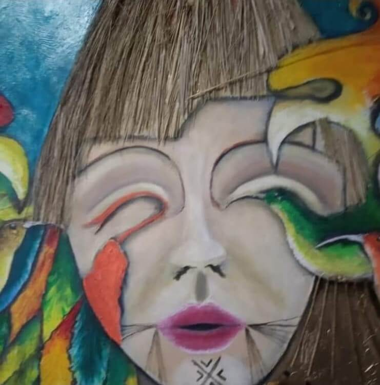

PERFIL ARTISTICO
El artista y docente, graduado de la Universidad Distrital Francisco José de Caldas, mi area son las artes plásticas con el tema del Precolombino y la naturaleza.
Mi trabajo abarca la escultura, pintura, dibujo y talla, utilizando técnicas experimentales para explorar sus inquietudes técnicas y teóricas.
Comenzó su carrera como dibujante y docente, y luego se adentró en las artes plásticas para crear obras que fomentan el debate sobre la falta de identidad en la sociedad colombiana antigua y modernas conectando con la naturaleza.
Para fortalecer my formación, he participado en espacios de formación teórica y he expuesto mis trabajo en varios lugares, incluyendo el Senado de la República ,el Consejo de Bogotá y tambien en el exterior.
 X
X
-
- 